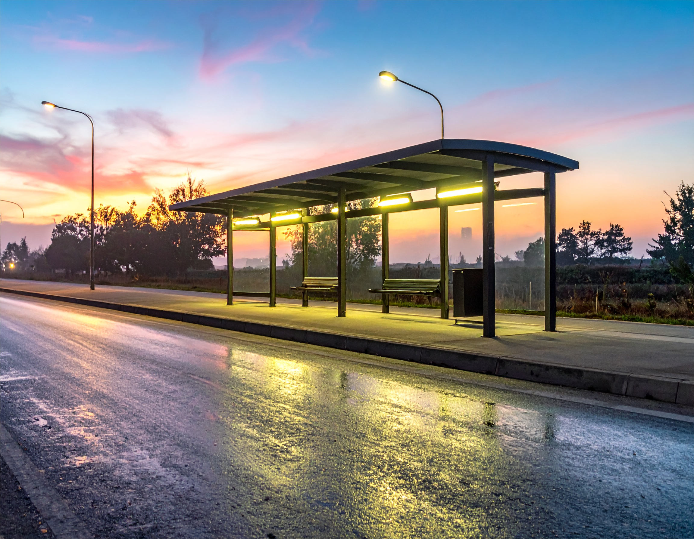

A small letter to you
If you are reading this, thank you for being curious. INDUS started as a slow experiment — a camera, a few ideas, and the stubborn belief that small, careful observations of ordinary life are worth sharing.
I make short films and quiet visuals to remind myself that the ordinary can be beautiful. If a scene moves you for even a second, I've done my job.